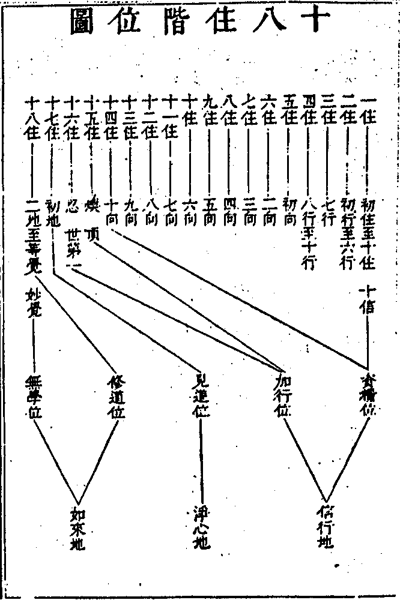
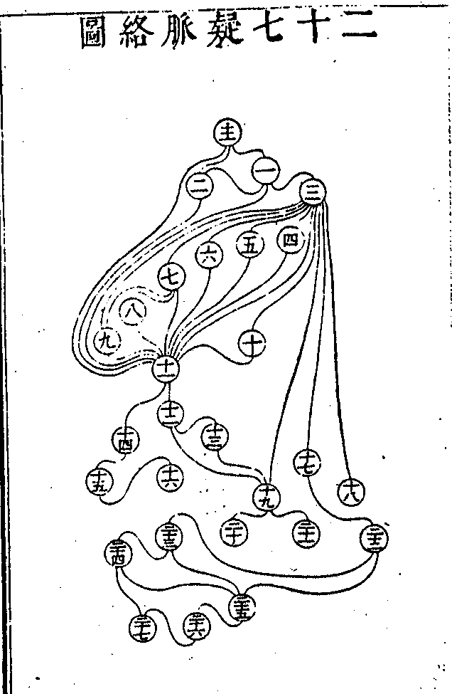

嘉興大藏經 第31冊
No.B269 金剛般若經疏論纂要刊定記會編 (10卷)
【唐 宗密述疏 宋 子璿錄記 清 行策會編】
第 1 卷
金剛般若經疏記會編科文
十八住階位圖

十八住階位圖說
(第一生配初發心住并攝前十信及餘九住共二十心二中是六波羅蜜故次配六行四中法身分言說證得於證得中開智相福相故配後三行第十八中有六種具足初一具足配二地至等覺十位後五無上具足配妙覺位其餘配屬可見)。
詳夫諸教所說地位差互不同或說五十二位或將十信攝入十住但說四十二位於中或復開前合後開後合前或前後俱開俱合開之則廣合之則狹又或借小明大借權明實名相位號出入淆訛徇名遺旨多見差謬乃至楞伽諸典泯之全無纓絡等經具說成有若有若無若廣若狹皆隨宜之說也惟華嚴行布萬殊圓融一際有無闊狹悉皆無閡方為了義耳所以者何以約法則無約人則有今經云一切賢聖皆以無為法而有差別無為故無差別故有於差別中不無闊狹也論主既仰師補處深悉經義以宗派兼明故正住中道不墮有無以法喻齊顯故初後中間酌於闊狹配十八住處說三地五位誠盡善矣記主云然其行人念念須冥佛境反窮果海自然階降不同若預等級用心畢竟障於證入況此經宗無相豈合列位淺深但約情惑漸薄地位轉高義相稍同故略配攝也斯言得之然今之人乃有以此而病無著者嗟乎不解即相離相妄謂一向無相所以墮增上慢因果不分謬執經宗非毀先聖好心學般若者幸勿徇此一邊之見住於中道離障證真依無為法入賢聖位則庶乎其不差矣。
二十七疑脈絡圖

二十七疑脈絡圖說
(首曰主者即不住相布施也以此是疑主故展轉生起至二十七於中第三出十疑第十一總承前疑是為脈絡肯綮處餘疑可知)。
佛乃不思議人經名不思議說不思議者非思議能解也非思議能解者無思議者乃能解也無思議能解者非思議竟莫能解也何以故如上二十七疑來自經文之外已非思議所及然有次序來者有隔越來者有通貫來者有分承來者次或可知隔即難曉況通貫分承乎譬猶身中血脈地中泉脈經絡支派潛伏流注殊非尋常義現於文易開物解者比也況加之以麤心淺心徇臆見妄生穿鑿何關經義故曰非思議能解也彌勒以補處之智冥妙覺之經演難思之偈授登地之人曰斷種種疑天親始理疑脈以貫經曰斷二十七種疑故曰無思議者乃能解也昔者以文求義矛盾何多今也以脈定文參商斯絕違惟見其順塞惟見其通斷惟見其續暗惟見其明細心深心虛所見好古敏求之力也故曰非思議竟莫能解也好心學般若者當澄神攝慮熟翫而細研之將見此經全體血脈朗然躍現於文字句偈之表由是永斷群疑深解義趣依解起行行起解絕不妨從思議中親到無思議處即是親見不思議人親聞不思議說也尚勉之哉。
金剛般若經疏記會編序
一切眾生自性般若與諸佛平等眾生唯妄執未謝故波迸六道甘淪溺而不之返世尊為說一切修多羅不過令其於己躬下證其本有如是之事而已然諸契經演說不同有曲有直有純有雜唯金剛般若一經破執斷疑最為直說純說者也此經總之則一析之有三種一曰實相般若如金之堅即理經也二曰觀照般若如金之利即行經也三曰文字般若如金之光即教經也利根圓獲鈍者淺執昔六祖大師聞客誦至應無所住而生其心中峰老人讀至荷擔如來阿耨多羅三藐三菩提豁然悟入此頓見實相最上利根也其次則明觀照又次則信文字至於但信文字根斯為下矣然末世頓入者少故理由行證行藉教明則文字實又二種般若之津筏也是經文則甚略而義該大部入位上流乍難窺測然自創譯已來此方疏釋約數百家深經淺解已謂少益況偏辭臆說至有不堪聞見者乎昔佛滅後西域有無著菩薩入日光定上升兜率詣彌勒問此經義彌勒以八十偈頌之無著出定與其弟天親各稟偈造論二論互釋經旨彌深仍非淺智所了唐圭山大師以妙悟之姿泳遊教海愍物興慈遂正本二論旁采諸說述纂要疏二卷辭精理極為眾釋中最然一往讀之不了者什猶六七石壁師別為廣解又失之太繁長水師復起而翦削之成刊定記而疏義顯矣疏義顯而後金剛般若教行理三經乃無不顯矣但今宇內謬解偏多傳講諸師又恆習世本各封己見以故鮮知宗尚嗟乎獨不思聖凡愚智藐若雲泥無著是登地菩薩天親是地前加行菩薩二人親稟彌勒彌勒是補處大士親稟釋尊今疏悉依二論則疏即佛語佛語不宗將誰宗乎策昔因閱藏幸遇斯文精研三復如獲重寶但以疏記別行尋討維艱文義連綿科章間錯起止血脈作者猶迷於是不量庸愚秉筆從事校經節疏會記編科繕寫嚴覈至三脫其稿於中添削釐合殊費斟裁俾覽者無神昏目眩之嫌有執謝疑除之益特授剞劂以廣流傳或曰子禪者也乃事經疏之學耶予曰噫子過矣請無遠論即圭山長水二師一則宗大鑑而徹禪源一則叩琅邪而悟心要亦皆續教內之真傳即文字而直指苟具正眼豈存二見況此般若者乃覺體之異名種智之殊號性空緣會法爾無差功德發心本無限齊吾將流通如是之經以期己他之兼利也流通文字用嚴化身流通觀照用嚴報身流通實相用嚴法身如是則為具足佛身何以故生了二因決能成就故經云是經義不可思議果報亦不可思議諸有福智者應作如是觀。
例言
金剛般若經疏論纂要刊定記會編卷第一
刊定記序云釋氏教金剛經世所由來尚矣自秦至今凡幾百載諷誦無卑高感應盈簡牘利及幽壤而達乎神明蓋趣大之坦塗破小之宏略也故補處頌以為本二論釋而有貫諸疏互解或依或違圭山大師撮掇精英黜逐浮偽命曰纂要蓋取中庸復申記略用備傳習石壁師仍貫義意別為廣錄美則美矣辭或繁長後學多不便用今更刊定翦削煩亂俾流而無滯學而思講庶吾道無墜地之患也已。
●疏文分三初標題目二初經疏名題。
金剛般若經疏論纂要(并序)
記云此題九字從寬至狹能所六重一能所釋謂金剛等五字是所疏論下四字屬能二能所詮謂經字屬能金剛等四字是所三能所簡有二一簡通謂經通一代時教般若唯屬當部二簡別般若猶通八部金剛但屬一經五能所喻金剛是能般若屬所六能所纂纂字屬能謂疏主也要字是所謂正義也若著并序二字復加一重二字是能上皆所攝然此七重不出教行人理謂經及疏論并序五字是教謂能詮能釋能序也般若通行謂觀照也纂字屬人即疏主也金剛要字屬理金剛喻實相即真理要字是正義即道理既知一題能所去取須知題內義理淺深金剛有三義謂堅利明也般若亦三義謂實相觀照文字也經有三義謂常貫攝也疏亦三義謂疏決布也論者議也亦三義謂議理議智議行也纂要亦三義謂要義要行要文也且金剛三義者以萬物不能壞能壞於萬物復能有照用可喻三種般若矣堅喻實相以其雖經多劫流迸六道未嘗生滅未嘗虧缺故云堅也故心經云是諸法空相不生不滅不垢不淨不增不減等利喻觀照般若謂此顯時照諸法空故言利也故心經云觀自在菩薩行深般若波羅蜜多時照見五蘊皆空度一切苦厄乃至云無智亦無得等明喻文字般若以文字能詮顯彰明實相觀照令顯現故由斯三義似彼金剛故舉金剛以喻般若然此般若諸佛眾生悉皆有之由彼在纏故不能利用苟能聞教解悟內外熏力則能斷煩惱出生死理智相冥能起大用與佛無異其猶金在礦中不能隨用苟能出礦必能成器斷物故知此慧無不有之故知此慧能建大義今云般若蓋大慧之梵音也金剛即般若之正喻法喻雙彰故曰金剛般若也若準經題具足合云波羅蜜即歎慧之功也唐言彼岸到此猶西域之風若順此方合云到彼岸彼岸者即是涅槃為對生死之此故號涅槃為彼意明般若是到彼岸慧斯則慧之別相也然到彼岸慧略有二意所謂頓漸也頓者此慧顯時一剎那間照諸法空即是到彼岸故名到彼岸慧以不歷多時乃名為頓漸者雖則頓照法空且習以性成任運計執所以策彼頓悟之慧覺察妄情損之又損之以至於無為此則究竟到於彼岸亦名到彼岸慧以歷多時故名為漸漸之與頓遲速雖殊一總得名到彼岸慧所以具足合云金剛般若波羅蜜今略不言也次明經字具三義者然準諸家解釋共有多義謂涌泉出生繩墨結鬘之類若佛地論中唯說二義謂貫也攝也貫穿所應說義攝持所化眾生且如來入滅二千餘年遺風若存得聞正法者斯皆經之貫穿義也眾生流浪莫知所從得佛教門咸歸正趣者斯皆經之攝持義也具此二義故名為經今以此二復加常義以對三種般若謂實相常觀照貫文字攝也然此一經羅什所譯句偈清潤令人樂聞至今長幼高卑盈於寰宇靡不受持此經也疏論纂要者即此一卷疏文也疏即青龍大雲資聖塵外等疏疏謂疏通理趣決擇義相布致文言也論即天親無著智度金剛仙功德施等論一一論中任運議於理智行也問既有疏論釋經何必更製斯疏答以纂要故即是纂他疏論之要義而成此疏也然纂要之設總有兩意一則上符聖旨二則下協人心意顯諸說有不符聖旨不協人心者且初意者只如此經是空無相宗有以法相行位廣列而釋此則不符聖旨失於宗故故序云或配入名相著事乖宗有人聞是空宗便作一味無相道理解釋此亦不符聖旨以宗雖無相義乃千端既以一味解釋斯則迷於末也故序云或但云一真望源迷派前則乖宗不迷派此則迷派不乖宗互有得失俱未圓暢復有縱於僻見以之注釋宗派俱失不足評量故序云其餘胸談臆注不足論矣然其諸說雖各有舛的以未兼暢故皆判云不符聖旨也今製此疏不添法相免乖於宗隨文釋之不迷於派離前二過宛乎得中此則超然獨符聖旨然今疏內皆用聖言故序云故今所述不攻異端疏是論文乳非城內況二菩薩師補處尊補處如來師釋迦佛展轉推本佛佛相承降及無著天親更無異說故知此疏便是佛言謗此疏者即同謗佛也故序云且天親無著師補處尊後學何疑或添或棄次下協人心者且諸家章疏在理未當於文且繁致令學人少敢措意故轉念者廣通會者稀故序云致使口諷牛毛心通麟角然今此疏撮其樞要直下銷經經疏相兼盈五十紙不問緇侶塵俗可以留心不唯上中下根可以學習有斯兩意所以述之此則前智後悲自他兼利也故云金剛般若經疏論纂要并序者并謂兼及也序者敘也敘述經疏之意也又序者緒也謂頭緒也意明此半紙之言是述疏入作之頭緒也。
●二作者嘉號。
京大興福寺沙門宗密述
京者都也大也即士庶貴賤都會之大處也然是西京非謂東北以有大興福寺暗揀故不言西也沙門梵語此云勤息謂勤修眾善止息煩惱釋眾之通號也述者明非製作符上纂要之言但是敘述先聖之旨非別製作故也例如孔子云述而不作信而好古竊比於我老彭。
●二敘宗旨二初敘讚經旨二初通明起教之緣二初明迷真起妄二初真空。
鏡心本淨像色元空。
上句即真性離緣下句即緣無自性大約如此若其委明應先略配後當廣釋略配者此兩句中鏡像是喻心色是法本淨元空通於法喻以鏡喻於心以像喻於色像是鏡之所現如色是心之所現鏡雖現像其像元空即顯鏡本淨也心雖現色其色元空即顯心本淨也言本淨者即是性淨通因果凡聖故故華嚴云非識所能識亦非心境界其性本清淨開示諸群生此略指配也若廣釋者鏡即人間所用之鏡然有塵薶不堪用者有雖淨而在匣者有淨無塵垢挂之高臺萬像斯鑒者今取後者為喻心者性相二宗所說各異相宗說者或以集起為心唯第八識集諸種子起現行故或以緣慮為心通於八識俱能緣慮自分境故然此所說但是有為生滅非今所喻性宗說者即如來藏本源自性清淨心也然今所明正是此心以是迷悟根本凡聖通依世出世間皆不離此所以起信論中立為大乘法體故論云摩訶衍者一法二義所言法者謂眾生心是心則攝一切世間出世間法依於此心顯示摩訶衍義又云依一心法有二種門一者心真如門二者心生滅門是二種門皆各總攝一切法此義云何以是二門不相離故以真如門是通相故攝一切生滅門雖是別相以是即真如之生滅亦攝一切以此二門同依一心為源則知萬法不出此心又如華嚴是圓極一乘亦以此心為一真法界之體故彼疏說統四法界為一真法界謂寂寥虛曠沖深包博總該萬有即是一心體絕有無相非生滅乃至云諸佛證此妙覺圓明現成菩提為物開示等然此一心有性有相相則凡聖迷悟因果染淨等異性則靈靈不昧了了常知然此性相不即不離以相不離性故只向同處異性不離相故只向異處同性不即相故未始有差別相不即性故未嘗不殊異蓋緣性相一味所以同異兩存其猶一水波溼性相同異可知然此靈心本非一切能為一切心之名字亦由此立今云淨者但約畢竟空義非是揀染名淨以但唯一心貫通染淨故荷澤云知之一字眾妙之門一切諸法依此建立既為得失之祕府乃是升降之玄樞稱眾妙門實為至矣今所辨者即是此心然前所說相宗二種乃是此心之內生滅一門對辨淺深故須料揀和會通攝則實無所遺本淨者喻則可知法中有二意一則此心從本已來性畢竟空故二則現為煩惱所纏而無染故此當起信論中真如門也故大集經云善男子一切眾生心性本淨心本淨故煩惱諸結不能染著猶如虛空不可玷汙心性空性等無有二等像即鏡中所現萬像色即本淨之心所現諸法然所現法不出色心今唯言色而不言心者一為文句窄故二為影在下故三為以初攝後故前二可知後意者一切諸法不出五蘊色之一字貫五之初今言色者舉初攝後也故大般若中每例諸法皆以色字為初如云善現般若波羅蜜多清淨故色清淨色清淨故一切智智清淨等由是文雖標色而意兼於心色心既彰萬法備矣元空者喻則可知法中有二意一即本來是空論云一切諸法唯依妄念而有差別若離心念則無一切境界之相二即現見空故色等諸法本來是空迷人不知妄執為有雖然執有未始不空故中論云諸法若不空即無道無果又云以有空義故一切法得成然此一句亦是釋疑恐人聞說心性本淨復見論云是心則攝世間法等便謂本具染等不合言淨故下句釋云像色元空也意云色等若實則汙淨心色等既空憑何汙心如鏡現穢像穢像元空似有實無云何染汙故云鏡心本淨像色元空也無上依經云清淨有二義一者自性清淨是其通相二者離垢清淨是其別相寶性論中亦有二義一自性清淨謂性淨解脫二離垢清淨謂障淨解脫魏譯唯識論云心有二種一者相應心所謂一切煩惱受想行等二者不相應心所謂第一義諦常住不變自性清淨心也今所明者即自性清淨及第一義諦心故云本淨復次兩句更互釋成以上句釋下句成色空義以下句釋上句成心淨義色若不空心則不淨心若不淨色即不空由心淨故色空由色空故心淨以色心二法不相離故當知由心淨故方能現色如鏡淨故方能現像染則不能又由色空故不能染心如像空故不能汙鏡實則汙也上句下句法喻對明反覆相成故云互釋。
●二妄有。
夢識無初物境成有。
此正當起信論中心生滅門也然此亦具法喻以夢喻識以夢中所現之物喻境如人睡後作夢於無物處見物喻心迷成識於無境處見境然雖物依夢現而夢物皆虛雖境從識生而識境俱妄也夢者如常人被睡蓋所覆心識昧略恍惚成夢準切韻中夢者心亂之貌亦云寐見曰夢意明心識昏亂見於異事名之為夢識者本淨一心忽然不覺不覺是妄心性乃真真妄和合目之為識即是第八阿梨耶識也故起信云依如來藏故有生滅心所謂不生不滅與生滅和合非一非異名阿梨耶識無初者初始也意明此識無前際故然真心妄識雖虛實有殊若究其源俱無初際然有兩意一則如佛頂經說煩惱菩提二俱無始謂自有此真心已來便有此妄識非謂真先妄後亦非妄先真後若言真先妄後即應諸佛更起無明若言妄先真後何有無真之妄居然獨立由是故知二俱無始此則夢喻不齊卻似金之與礦若言礦先金後即合所棄之礦鍊之得金若言金先礦後應可純淨金器重生於礦由是二物俱無初際於法可知問如論云依如來藏故有生滅心既言依真有妄則是妄後真先何得說云二俱無始答不然所言依者明妄無自體依真而成顯本末之義非先後之義故起信云以如來藏無前際故無明之相亦無有始若說三界外更有眾生始起者即是外道經說二者謂妄體全空都無生起之蹤跡故言妄無始也故起信云覺心初起心無初相即斯義也若據此意夢喻正同以夢生時無蹤跡故有茲兩意故云妄無初也然上夢礦二喻之中各取少分共況一識無初之義方盡其理夢則喻無初法礦則喻無初時若單用礦喻則妄識有實若唯取夢喻則妄識有始今既分取相似之處理極成矣物者即夢中所現之物也境者即是識中所變我法等境成有者且如夢中所見自他境界覺來反想即定是無正在夢時決定為有若不然者何有讚喜謗瞋厭苦欣樂等事耶故知有也如莊子中說莊周夢為蝴蝶都來忘卻莊周及乎睡覺夢除何曾更有蝴蝶為莊周時既不羨蝴蝶為蝴蝶時亦不羨莊周彼此各行互不相識然準彼書意以顯生死齊平今之所引意明執實之義謂依於妄識變起我法等相悟來了達則誠知是空若正迷時定執為有若不然者何有貪瞋愛惡取捨等事耶故知是有故成唯識論云依識所變妄見我法猶如幻夢幻夢力故心似種種外境相現緣此執為實有外境然雖夢中見種種事推其根本唯一夢心以夢心滅時夢事皆滅法中亦爾境雖無量原其根本唯一識心識心滅時境界隨滅故起信論云一切諸法唯依妄念而有差別若離心念即無一切境界之相則知三界唯心萬法唯識諒不虛也由是三界世間一切有漏染法皆從妄識而生故名此識以為妄本然一切有漏染法生起微著次第總有兩重一無始根本二展轉枝末展轉枝末即後逐妄科中所明無始根本正當此段言根本者即根本無明言無明者謂無妙覺之明故以就通相言之故當此識然根本無明具有二義所謂迷真執妄也迷真者真即真心本不生滅德相業用量過塵沙日用不知如狂如醉若貧女宅中寶藏窮子衣內明珠雖有如無枉受艱苦故華嚴經云於第一義不了名曰無明執妄者妄即五蘊色之與心如幻如化本無實體眾生認此為自身心計虛為實故名執妄故圓覺經云妄認四大為自身相六塵緣影為自心相乃至結云由此妄有輪轉生死故名無明然此二義遞互相成舉一則兼未嘗獨立但若執妄必須迷真但若迷真必須執妄譬如有人迷東必執西亦互相成立思之可見。
●二明習妄流轉。
由是惑業襲習報應綸輪塵沙劫波莫之遏絕。
此當妄法生起第二門展轉枝末也由是等者謂因此迷真成識現起世間一切境界緣此境界起惑造業受報無窮此中惑業報應四字但是三道然此三法諸教之中有名三障障聖道故或名三道引心邐迆至業報故或名三雜染以性不清淨故又此三障更相由藉由煩惱故起惡業由惡業因緣故得苦果初言惑者即煩惱也品類即根本及隨根本有六謂貪瞋癡慢疑惡見隨煩惱有二十謂忿恨覆惱嫉慳乃至散亂不正知等若以要言之不出根本中三謂貪瞋癡即此三種便能成就三界世間故華嚴云由貪瞋癡發身口意作諸惡業無量無邊等此惑因起由前無明迷平等理妄認五蘊身心即此身心是過患根本故肇公云約天地為高下約日月為東西約身為彼此約心為是非老子亦云吾有大患為吾有身及吾無身吾有何患故知此身是一切過患根本既執之為有遂分自他依此身心起諸煩惱於一切順情境上起於貪心於一切違情境上起於瞋心以護自身將為主宰也於此二中不知是妄任運而起乃名為癡此等煩惱究其所因皆從根本無明而有也次云業者然業雖無量統唯有三謂善惡不動也由前貪瞋熾盛發動身口作諸惡業即身三口四意三等十惡業也或有稍知因果貪來生榮樂之事即翻惡為善持不殺等五八十戒即善業也或厭下苦麤障忻上淨妙離修有漏禪定名不動業然此三種業雖勝劣不同皆由迷心所造俱有漏攝故圓覺經中結三業云皆輪迴故不成聖道由是則知前之三業皆依煩惱所成也言報應者應即是報既有業種蘊在藏識因緣會時必須受報涅槃經云非空非海中非入山石間無有地方所脫之不受報尚書云天作孽猶可違自作孽不可逭由是有業心有報應然若推諸業體相都無及受報時未嘗差錯惡因苦果善因樂果如影如響的無差謬然泛論果報六道不同以類收之但唯三種謂苦樂捨由前惡業為因即感三塗苦報謂地獄餓鬼畜生也由前善業為因即感人天樂報謂四洲六欲也由前不動業為因即感上界差別之報謂色無色界也然於三界之中所受苦樂之身是別業正報所居勝劣器界即共業依報正報有生老病死依報有成住壞空器界空而復成有情死而還生無始至今聯綿不絕迷惑耽戀誠可悲夫故法華云三界無安猶如火宅由是報因業感業由惑成惑因無明無明無始一念妄有也則知三界六道有情無情究其所從皆因夢識而有襲習綸輪者襲謂承襲即相續義由惑發業業能招苦次第相續故習謂熏習即相學義意明惑業念念學學念念熏習故唯識云由諸業習氣二取習氣俱故名為習然此二義必互相資謂相續故相學相學故相續故云襲習故唯識云前異熟已盡復生餘異熟也譬如有人襲儒學文由承襲於儒故方能學習於文又由學習於文故方能承襲於儒也相資之義豈不昭然綸即綸緒謂眾生業種雖復無邊終不一時受六道報報有次緒故名綸緒然有兩意一如人負債強者先牽故二如人種物潤者先生故輪即輪轉謂生已復死死已還生生死不停故名輪轉或天上死人間生人間死畜生生等故無常經云循環三界內猶如汲井輪然此二義亦互相資由綸緒故輪轉由輪轉故綸緒也其猶搔繭抽絲由彼絲輪轉而不止故使絲緒起之不絕亦由絲緒起之不絕故使絲輪轉而不止或可淪字其義亦通即沒溺義也謂於生死大河長受沒溺故云淪涅槃經云若有眾生樂諸有為造作諸業是人迷失真常是名暫出還沒疏中且用輪字如向所說惑業則言其襲習報應則言其綸輪然二二對辨亦互相資謂由惑業襲習故使報應綸輪實由報應綸輪故令惑業襲習斯則乘因感果依果造因因果相資以之不絕此即十二因緣前前為因後後為果之義故唯識頌云由諸業習氣二取習氣俱前異熟已盡復生餘異熟或曰如是起惑造業受報輪轉時劫長短耶故次云塵沙劫波莫之遏絕也塵即碎十方世界之微塵沙即殑伽河中如麵之沙謂此河周四十里沙細如麵劫波者梵音此云時分大劫小劫長時短時延促雖殊通名時分遏止也絕滅也莫之遏絕者言不能止滅也意謂六道眾生起惑造業受生輪轉已來將一沙為一劫波沙盡而劫波不盡又將一塵為一劫波塵盡而劫波無盡塵沙有限劫波無窮相續至今不能止之滅之故云莫之遏絕也然此二段字句雖多若論實事不過五字謂心識惑業報其餘並是顯敘真妄成立輪迴之辭意謂本是一心不覺成識起惑造業生死無窮是故如來現身說教故大科云起教緣也。
●二別明說教之意如法華經云我以佛眼觀見六道眾生貧窮無福慧入生死險道相續苦不斷乃至為是眾生故而起大悲心等文二初敘說阿含之意二初正敘。
初二句標佛現身也故者所以義我即指佛也言滿淨者揀異分淨以佛無明永盡無念之極故覺即覺悟者即指人謂佛是覺悟之人也若梵語菩提此翻為覺斯則約法梵語佛陀此云覺者斯則約人今此辨人故言覺者亦可滿字是總淨覺為別者字屬人即明如來是滿淨滿覺之者揀諸聖人覺淨未滿唯佛如來三障都盡三覺具圓故號如來為滿淨覺者若以此二望眾生二乘菩薩諸佛及本性料揀有兩種四句一者眾生不淨二乘菩薩分淨諸佛滿淨本性但淨二者眾生不覺二乘菩薩分覺諸佛滿覺本性但覺今於此二四句中皆當第三也現相者即化身相也人中者即現化之處也唯向人中示相者天上著樂無由發心三塗極苦正當難處唯於人中苦樂相兼對苦必能發心所以佛出現化天上如病未發豈須鍼艾三塗似膏肓之病不足醫治人中如小瘵所縈堪可與藥故佛出現然如來現相總有四種謂他受用報身大化小化隨類化身等今明說此教者即小化身也然有八相謂一從兜率天退二入胎三住胎四出胎五出家六成道七轉法輪八入涅槃此論現身但明成道之相次明說法即轉法輪相佛成道之相身長丈六紫磨金容項佩圓光胸題卍字三十二相八十種好八部擁衛四眾欽崇巍巍峨峨光映日月德相繁廣不可具陳此小化身其相劣弱若望受用即雲泥有殊故法華經說長者脫珍御服著弊垢衣珍御之服以喻受用之身弊垢之衣即況紫磨金體蓋以眾生垢重不堪見勝妙之身既不能見亦無所聞則於眾生都無利益大悲接物故現小化亦如法華經說窮子見父踞師子床寶几承足富貴殊勝威德特尊窮子見之竊作是念此或是王或是王等非我傭力得物之處長者見子默而識之乃至云即脫瓔珞細軟上服嚴飾之具更著麤弊垢膩之衣右手執持除糞之器以此方便得近窮子此喻如來隱彼勝身現於劣相也先說下正明設教此方佛事藉以音聲若無言教現相何益教先說小後方說大或曰此明般若何論小乘答雖同佛言有深有淺若不對辨安知淺深然一代佛教不出大乘小乘乃至圓宗亦大乘攝其所宗者皆宗因緣雖則同宗因緣於中淺深有異小乘即生滅因緣大乘即無性因緣無性因緣者如中論云因緣所生法我說即是空空即無性義也今明小乘故云生滅因緣生滅因緣者諸法緣會即生緣離即滅既生既滅足知無常然則不無生滅之法以有法執故也然佛出世先說小者有二對治故說生滅對治凡夫外道執我我是主宰義既言生滅則知無主無主無宰則無我也說因緣對治外道自然之計外道所執多執神我有作受故兼執自然既言因緣則非神我自然也為治此二是故先說生滅因緣即佛初成道始從鹿苑度五俱輪次度舍利弗目連迦葉三兄弟等於十二年間所說即諸部阿含等經是也令悟等者佛說此法意令眾生悟四真諦也此有兩種因果謂集是世間因苦是世間果道是出世因滅是出世果也苦即三苦八苦三苦謂苦苦壞苦行苦八苦謂生老病死愛別離怨憎會求不得五陰盛集即業惑如逐妄中說滅即有餘無餘二種涅槃入經可見道即八正道謂正見正思惟正語正業正命正精進正念正定也諦者誠實義如世間苦集逼迫和合事無虛謬名為實義非謂不生不滅名實即說苦定苦集定集等以是義故四皆實也故遺教經云日可令冷月可令熱佛說苦諦實苦不可令樂即如佛於鹿苑為五比丘三轉四諦法輪之例也三轉者一示相轉示謂顯示苦行相等令其悟解云此是苦此是集等二勸修轉勸謂誡勸令其修斷云此是苦汝應知此是集汝應斷等三作證轉作證謂引己所作令其信受云此是苦我已知此是集我已斷等意言我已知已斷已修已證汝等效我當知當斷當修當證如是說已一類小根之人如言啟悟厭生死苦樂求涅槃發心進修作五停心等七種方便斷三界四諦下分別麤惑得初果證乃至進修漸斷三界俱生細惑證餘三果得阿羅漢則令世間因亡果喪出世間因生果證法華云為求聲聞者說應四諦法度生老病死究竟涅槃故云先說生滅因緣令悟苦集滅道也。
●二結判。
既除我執未達法空。
我執者即於五蘊總相計有主宰名為我執若一一推求色等性中不見我體名為我空若見五蘊之法實有體性名為法執若了五蘊如幻如化從緣無性名為法空既除者已盡也以小乘人聞說生滅因緣不執於我故云既除我執未達者以未聞說無性因緣猶計蘊法為實故云未達法空若具言之合云既除我執已達我空未達法空未除法執今則上執下空文影略故又既除我執便是已達我空未達法空便是未除法執故也。
●二敘說般若之意二初總示大部二初敘教釋意。
病根者喻法執也如人有病令人不安如木有根能生枝葉意云二執如病令諸眾生不得安樂若取法執為病病即是根持業釋也若取我執為病是病之根即依主釋今則病通二執根喻法執以能所依二體異故我是能依法是所依以能從所生故能非根根唯局所也由是凡夫有我執必兼有法執二乘有法執不必具我執又二乘無我執則未必無法執菩薩無法執則必無我執如因迷杌方可見人等般若即慧也為顯此法故遺言成教教即文字般若即觀照實相二般若也今約佛論故通法教俱名般若也此中意云如來意欲盡眾生有執之病根方談空宗之般若然大乘教法無量無邊何故此中唯談般若謂正能破執大乘初門二執若除真性自現故唯談此除其病也故古德云華嚴經如治國之法養性之藥般若教如定亂之將治病之藥二經既爾餘可例知心境等者然佛初說小乘心境俱有說大乘法相即境空心有說般若教即心境俱空今正明此故云齊泯心即心心所法境即諸識相分心通能變能緣境通本質影像心境等亡故云齊泯謂約遍計則都無所有如繩上蛇約依他則緣無自性如麻上繩由心故境由境故心境滅心空心如境謝然諸法雖多不出心境心境既泯則一切皆泯也心經亦云無眼耳鼻舌身意無色聲香味觸法無眼界乃至無意識界等故云齊泯即是真心者顯非斷滅恐聞一切諸法泯之皆無諸法既無應成斷滅故此顯云即是真心然此心與上心字不同上是緣生妄心即前夢識也此是常住真心即前鏡心也為揀別故故特言真以一切諸法皆依此心若離此心無別有法故經云一切世界因果微塵因心成體心之所現名曰依他執之為實乃名遍計依計既泯即是圓成如繩依麻有蛇托繩生繩蛇既亡則麻著矣此是疏主出般若之密意若據經文則但言諸法皆空不言即是真心故下文云離一切相即名諸佛文雖不彰意實如此若法性宗即直於諸法空處顯出真心故圓覺經云種種幻化皆生如來圓覺妙心猶如空華從空而有乃至云諸幻盡滅覺心不動故云即是真心也垢淨雙亡者上言心境染淨已含文未顯彰故重明也意云非但無諸有漏心境之法若於法中染淨之法亦復不有為對治垢染方彰淨法之名所治之垢既亡能治之法何立如無慳貪布施亦遣等則知若理若智若因若果一切行位諸對治門悉皆不有垢淨並無故曰雙亡故心經云無無明亦無無明盡等一切清淨者此淨與上淨字不同上即對染之淨此名真空曰淨以聲聞怖空故言清淨清淨即空義也大般若中或則云空或言清淨然萬法雖多不出心境恐收不盡又約垢淨重明斯則是法皆攝竟無所遺故言一切也故大般若云善現般若波羅蜜多清淨故色清淨乃至諸佛無上菩提悉皆清淨又非謂泯卻心境顯真心了然後亡垢淨顯真空此乃文家成隔句對若欲順義應云心境齊泯垢淨雙亡一切清淨即是真心理則明矣謂真心之中本無心境垢淨等法名之為空非謂無於心法成於斷滅故唯識頌云初即相無性次無自然性後由遠離前所執我法性此諸法勝義亦即是真如常如其性故即唯識實性然此與前迷真習妄正為翻對若無前意焉起此文。
●二顯瑞彰會。
三千瑞煥十六會彰。
三千即三千大千世界如下所明瑞即祥瑞煥明也佛說此經之時放大光明照三千界靡不煥然復現種種奇異之事有此祥瑞故云三千瑞煥故大般若經第一云爾時世尊於師子座上自敷尼師壇結加趺坐入等持王三昧安詳而起一一身分各放六十百千俱胝那庾多光各照三千大千世界乃至云令此世界六種變動盲者得視聾者得聞等又云其諸天人佛神力故各見於佛正坐其前咸謂如來獨為說法十六會彰者般若類有八部謂大品小品放光光讚道行勝天王文殊問金剛唐譯六百卷二百七十五品總一十六分前五無名後十一分有名前六分品後十不分品即初分七十九品第二分八十五品第三三十一品第四二十九品第五二十四品第六勝天王般若分一十七品第七曼殊室利分第八那伽室利分第九能斷金剛分第十般若理趣分第十一施波羅蜜多分十二淨戒十三安忍十四精進十五靜慮十六般若即大明度無極經四卷同前五分濡首菩薩無上清淨分衛經二卷即第九分實相般若即第十分道行小品各十卷同第四分光讚十卷放光三十卷大品三十卷皆同第二分然上諸本開合大部文勢次緒事理一一皆同但廣略之異唯仁王一本不在八部之中。
●二別示今經二初略標指。
今之所傳即第九分。
如文。
句偈隱略旨趣深微慧徹三空檀含萬行。
句有文句義句今通此二偈謂積句所成亦通此二隱謂潛隱即現在無文如經中多無所斷之疑文及其住名略謂少也即現雖有文而不廣故如經中唯有能斷之文及有住義旨謂意旨趣謂旨之所歸徹理曰深難覺曰微難覺有二意一為文隱略故義趣難覺二為徹理故甚深難覺然隱略深微之相即下所云慧即返流淨用約斷執觀空得名般若正翻為慧不云智也下釋題中廣辨體相三空者即我空法空俱空也如下經云無我相人相等即我空也我相即是非相等即法空也離一切相即名諸佛是俱空也二空可知俱空有三說一別觀人法名二空同一剎那雙觀人法名俱空二即二執既遣二空亦遣名俱空三即能所遣時慧亦無住即與本性相應此時自無人法二相及非法相等名俱空徹謂透徹慧是能徹三空是所徹般若照時透過三空之表即與本源相應以本心源非空非有為對人執方說人空為對法執方說法空為對二執方說俱空即空是能對執為所對所對之執既遣能對之空亦除空執兩亡方契本性若住空境未曰相應所以疏中特言慧徹由是四加行位菩薩為取空相不名見道故唯識偈云現前立少物謂是唯識性以有所得故非真住唯識今既徹於空相能所兼亡即同唯識見道頌云若時於所緣智都無所得爾時住唯識離二取相故檀含萬行者梵音檀那此云布施含謂含攝萬行即菩薩所行之行不唯於萬今舉大數耳以布施含於三施三施該於六度六度包於萬行以本望末故曰檀含萬行也所以佛答修行唯言布施故彌勒頌云檀義攝於六資生無畏法此中一二三是名修行住。
住一十八處密示階差斷二十七疑潛通血脈。
此約二論以敘歎也準無著論中從佛正說以下乃至經終分為十八住處謂第一發心住乃至第十八上求佛地住即是修大乘行人從因至果安住之處密示階差者謂隱密示現行人修行入位階降差別之相以經中都無十八住名含有十八住義以不顯配故云密示前後淺深不同故云階差也然階差之相在下正宗文前疏文具明斷二十七疑者準天親論從佛答三問畢便躡跡斷疑乃至經終二十七段謂第一求佛行施住相疑乃至第二十七入寂如何說法疑潛通血脈者潛謂潛闇通謂通流血脈者喻也以經中多分唯有能斷之語而無所斷之言由是文起孤然勢意斷絕及尋經旨皆有所因文雖不彰理且連貫以不明顯故曰潛通其猶人身血脈外雖不彰內宛流注約喻顯法故曰潛通血脈也此義見於逐段敘疑之文。
●二反顯。
不先遣遣曷契如如。
不先遣遣者即反顯慧徹三空之義謂二執為所遣二空為能遣又二空為所遣俱空為能遣以俱空遣二空空病亦空故云遣遣如圓覺云應當遠離一切幻化虛妄境界由堅執持遠離心故心如幻者亦復遠離遠離為幻亦復遠離離遠離幻亦復遠離曷契如如者曷何也契合也如如者即上三空之表本源真性也二空破執執喪空明空病亦空方契本源真性也意云若不先遣遣即滯有滯空何能契合真如本性然此語勢亦是御注序文彼云咸歸遣遣之旨盡入如如之妙。
●三順結。
故雖策修始終無相。
如經中度四生即是策修無生可度即是無相行六度即是策修不住相布施等即是無相如是類例遍於經中然度生修行合是有相今以無生可度無住布施無法可說無我修善故順經宗無相之義一經前後無不談此故曰始終又因心果心咸皆如是斯則正策修時無相正無相處策修非謂前後始終皆爾。
金剛般若經疏論纂要刊定記會編第一卷(終)